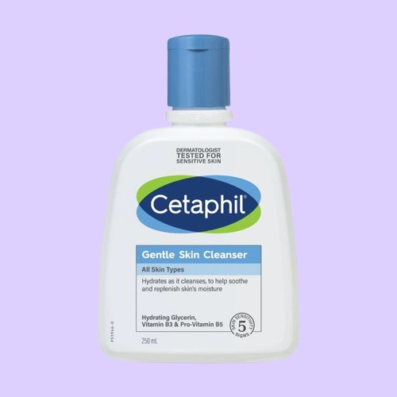

Review Produk

WARDAH HYDRA ROSE GEL TO FOAM

CETAPHIL GENTLE CLEANSER

SKIN CONDITIONING MILK HATOMUGI

Whitelab Hydrating Serum

Whitelab Brightening 5%

Hanasui Sunscreen

Toner Hatomugi

SUKIN Moisturizer

HAPLE ROSE SKY moisturizer.

Face wash afforadable gak bikin dompet dan kulit ketarik.
Hero ingredients : 🌸Rose oil
ingredients : Aqua, Glycerin, Sodium Cocoyl Isethionate, Acrylates Copolymer, Cocamidopropyl Betaine, Sodium Methyl Cocoyl Taurate, PEG-7 Glyceryl Cocoate, PEG-40 Hydrogenated Castor Oil, Rosa Damascena Flower Oil, Fragrance, Phenoxyethanol, Ethylhexylglycerin, Disodium EDTA
🧪 Tekstur & Aroma: Awalnya gel bening → berubah jadi busa lembut. Wangi bunga mawar yang ringan dan calming. Tidak meninggalkan rasa ketarik
cocok untuk kulit : dry skin,normal skin,sensitif skin,
💸40.000/100ml
Kalau kamu lagi cari face wash yang lembut banget di kulit, tanpa banyak drama, dan cocok buat kulit sensitif, Cetaphil Gentle Skin Cleanser ini layak banget kamu coba. Produk ini udah jadi andalan banyak orang dari dulu karena formulanya yang simple tapi efektif.
Ingredients: Water, Cetyl Alcohol, Propylene Glycol, Sodium Lauryl Sulfate, Stearyl Alcohol, Methylparaben, Propylparaben, dan Butylparaben. formulanya tanpa sabun dan tanpa pewangi, jadi aman banget buat kulit sensitif atau yang gampang merah.
Cara Pemakaian: Yang unik dari Cetaphil ini adalah bisa dipakai dengan atau tanpa air.
Cocok untuk Siapa? Kulit sensitif Kulit kering Kulit berjerawat yang lagi merah atau iritasi Kulit remaja yang baru mulai skincare Bahkan aman buat bayi & ibu hamil Tapi buat kamu yang punya kulit super berminyak atau pakai makeup tebal, mungkin butuh produk lain buat deep cleansing.
✨ Kelebihan: ✔️ Super lembut dan nggak bikin kulit kering ✔️ Bebas pewangi dan sabun ✔️ Aman buat semua umur dan kondisi kulit ✔️ Bisa dipakai dengan/ tanpa air ✔️ Nggak menyumbat pori
➖ Kurang memberikan rasa “bersih maksimal” kalau kamu suka yang kesat ➖ Kurang cocok untuk oily skin kalau dipakai sendiri tanpa cleansing tambahan
Cetaphil Gentle Skin Cleanser cocok banget dijadikan face wash harian—terutama saat kulit kamu lagi sensitif, kering, atau capek sama produk yang keras. Nggak bikin perih, nggak bikin kering, dan tetap menjaga kelembapan kulit. Cocok banget buat jadi teman setia di skincare routine, apalagi pas kulit lagi “rewel”.
💸75.000/125ml
Setelah sukses dengan versi tonernya yang watery dan ringan, Hatomugi hadir dengan Skin Conditioning Milk sebagai pelengkap kelembapan yang lebih tahan lama. Produk ini cocok banget buat kamu yang butuh tambahan kelembapan tanpa rasa berat di kulit. Cocok jadi moisturizer ringan untuk sehari-hari!
Water, Dipropylene Glycol, Glycerin, Coix Lacryma-Jobi (Job’s Tears / Hatomugi) Seed Extract, Squalane, Stearic Acid, Isopropyl Myristate, Dimethicone,
Tekstur & Aroma: Sesuai namanya, produk ini punya tekstur seperti susu—lebih kental dari toner tapi tetap ringan. Mudah diratakan, cepat meresap, dan nggak lengket di kulit. Aromanya hampir nggak ada alias fragrance-free, jadi aman banget buat kulit sensitif atau yang nggak suka skincare beraroma.
🧴 Cara Pemakaian: Gunakan setelah toner atau essence (bisa setelah Hatomugi tonernya juga) Ambil secukupnya, ratakan ke wajah dan leher Bisa dipakai pagi dan malam hari. Enak juga buat dijadikan pelembap ringan sebelum sunscreen
🌈 Cocok untuk Siapa? Kulit kering dan dehidrasi Kulit normal dan kombinasi Kulit sensitif yang butuh hidrasi tanpa rasa berat
✨ Kelebihan: ✔️ Tekstur ringan, cepat meresap ✔️ Memberikan hidrasi lembut tanpa bikin berminyak ✔️ Nggak menyumbat pori (non-comedogenic) ✔️ Bisa dipakai pagi dan malam ✔️ Aman buat kulit sensitif Cocok juga buat remaja dan pemula skincare
⚠️ Kekurangan: ➖ Kurang cocok untuk kulit yang butuh pelembap rich atau anti-aging ➖ Tidak travel-friendly karena kemasannya besar dan gampang tumpah kalau nggak hati-hati ➖ Efeknya lebih ke hidrasi aja, nggak ada efek brightening atau anti-jerawat
Hatomugi Skin Conditioning Milk adalah pelembap ringan yang cocok buat kamu yang cari hidrasi harian tanpa rasa berat. Teksturnya nyaman, nggak lengket, dan bisa digunakan untuk semua jenis kulit—terutama buat yang pengen skincare simple tapi tetap jaga kelembapan kulit.
💸80.000/230ml
Kalau kamu lagi cari serum yang fokusnya melembapkan kulit, tapi juga bantu bikin kulit terasa lebih kenyal dan sehat, Whitelab Hydrating Serum ini bisa jadi pilihan yang cocok banget. Diperkaya dengan kombinasi Hyaluronic Acid dan Marine Collagen, serum ini dirancang buat jaga hidrasi sekaligus menutrisi kulit secara lembut.
🔬 Ingredients: Water, Sodium Hyaluronate (HyaluComplex‑10), Panthenol, Hydrolyzed Collagen (Marine Collagen), Glycerin, Butylene Glycol, 1,2‑Hexanediol, Allantoin, Propanediol, Phenoxyethanol, Tetrasodium EDTA, dan beberapa bahan pelengkap lainnya
🌊 Tekstur & Aroma: Serum ini punya tekstur cair agak kental, tapi tetap ringan dan cepat meresap ke kulit tanpa rasa lengket. Rasanya adem dan nyaman banget waktu diaplikasikan. Aromanya hampir nggak ada, jadi buat kamu yang sensitif sama wewangian, produk ini aman banget dipakai.
🧴 Cara Pemakaian: Dipakai setelah toner (atau langsung setelah cuci muka kalau kamu skip toner) Teteskan 2–3 tetes ke wajah, ratakan perlahan sambil ditepuk-tepuk ringan Bisa dipakai pagi dan malam hari Lanjutkan dengan moisturizer dan sunscreen (kalau pagi)
🌈 Cocok untuk Siapa? Kulit kering dan dehidrasi Kulit kusam yang butuh kelembapan ekstra Kulit sensitif yang ingin hidrasi tanpa iritasi Semua jenis kulit yang butuh hidrasi harian ringan
✨ Kelebihan: ✔️ Teksturnya ringan dan cepat menyerap ✔️ Nggak lengket dan nyaman buat dipakai siang maupun malam ✔️ Nggak mengandung alkohol atau pewangi ✔️ Melembapkan kulit dengan efektif ✔️ Bantu bikin kulit lebih kenyal dan glowing alami
⚠️ Kekurangan: ➖ Hasilnya lebih terasa untuk jangka panjang, bukan instan ➖ Untuk kulit yang butuh anti-aging kuat atau brightening tajam, efeknya belum terlalu nampol ➖ Kalau kulitmu super kering, mungkin perlu layering dengan pelembap yang lebih rich
Whitelab Hydrating Serum adalah serum pelembap yang ringan, nyaman, dan cocok buat daily hydration. Kombinasi HyaluComplex dan Marine Collagen-nya bikin kulit terasa lebih halus, lembap, dan sehat dari hari ke hari. Cocok untuk semua jenis kulit, apalagi buat kamu yang suka skincare simple tapi tetap fungsional.
💸65.000/30ml
Serum ini tuh cocok banget buat kamu yang pengen kulit cerahan, lembapan, tapi tetap ringan dan gak bikin kulit ketarik atau gerah. Dengan kandungan niacinamide 5%, dia udah di dosis yang pas—gak terlalu tinggi, jadi aman buat pemula dan kulit sensitif.
🔬ingredients :Aqua 1,2‑Propanediol, Niacinamide, Methyl Propanediol, Glycerin, Sodium Hyaluronate, Hyaluronic Acid, Marine Collagen/Soluble Collagen, Oligo Sodium Hyaluronate, Hydrolyzed Hyaluronic Acid, Hydrolyzed Sodium Hyaluronate, Hydroxypropyltrimonium Hyaluronate, Sodium Hyaluronate Cross‑polymer, Sodium Acetylated Hyaluronate, Dimethylsilanol Hyaluronate, Potassium Hyaluronate, Phenoxyethanol, Allantoin, Dipotassium Glycyrrhizate, Glycyrrhiza Glabra (Licorice) Root Extract, Carbomer, Triethanolamine, PEG‑40 Hydrogenated Castor Oil, 1,2‑Hexanediol, DMDM Hydantoin, Pentylene Glycol, Perfume
ekstur & Rasa di Kulit Pas ditetesin ke wajah, teksturnya agak cair tapi tetep ada rasa “licin” dikit karena efek humektan-nya. Gampang banget diratain, dan cepat nyerep tanpa rasa lengket.
🌿 Cara Pakai Pakai setelah cuci muka (bisa pakai toner dulu atau langsung juga oke), tetesin 2–3 tetes aja ke wajah, terus tepuk-tepuk lembut. Bisa banget dipakai pagi dan malam, dan lanjut pelembap + sunscreen di pagi hari.
Cocok untuk siapa? ✔️ Kulit berminyak tapi butuh hidrasi ✔️ Kulit kusam atau punya bekas jerawat ✔️ Kulit sensitif yang butuh brightening pelan-pelan ✔️ Cocok juga buat pemula skincare!
✨ Kelebihan: ✅ Teksturnya ringan dan gampang banget meresap ✅ Kandungan niacinamide 5% aman untuk pemula dan kulit sensitif ✅ Ada hyaluronic acid + marine collagen buat kulit tetap lembap dan kenyal ✅ Nggak bikin lengket atau piling pas dilayer ✅ Ngebantu mencerahkan kulit dan nyamarin bekas jerawat secara perlahan ✅ Udah ada licorice extract juga, jadi bantu tone kulit lebih merata ✅ Gak ada alkohol & paraben, plus hampir gak ada aroma
✨SPF 50 PA++++, ada cooling sensation. Jujur di aku bikin perih, wanginya cukup menyengat, dan setelah pemakaian aku ngerasa kulit jadi kering.
🔬ingredients :Aqua, Diethylamino Hydroxybenzoyl Hexyl Benzoate, Ethylhexyl Methoxycinnamate, Neopentyl Glycol Diheptanoate, Bis‑Ethylhexyloxyphenol Methoxyphenyl Triazine, Butyloctyl Salicylate, Tris‑Biphenyl Triazine, Ethylhexyl Triazone, Polyester‑7, Butylene Glycol, Dimethicone, Glycerin, Ethanol, Sodium Polyacrylate, Hydrogenated Polydecene, Phenoxyethanol, Decyl Glucoside, 1,2‑Hexanediol, Trideceth‑6, Lactobacillus/Collagen Ferment Filtrate (Collagen Water), Tocopheryl Acetate (Vit E), Biosaccharide Gum‑4, Fragrance, Disodium Phosphate, Xanthan Gum, Sodium Hyaluronate, Artemisia Vulgaris Extract (Mugwort), Sodium Hydroxide
maaf fak bisa lanjut riview yaaa 😭
Tekstur & Rasa di Kulit Pas pertama kali keluar dari tube, dia kayak lotion cair yang gampang diratain. Begitu dipakai di wajah, langsung nyerap dan nggak ninggalin whitecast sama sekali.
Produk legendaris asal Jepang ini sering disebut sebagai hydrating toner multifungsi yang punya kandungan utama dari ekstrak tanaman Job's Tears (Hatomugi). Teksturnya ringan banget dan cocok untuk berbagai jenis kulit, apalagi yang haus kelembapan!
Tekstur & Aroma: Hatomugi Skin Conditioner punya tekstur cair seperti air, bening, ringan, dan cepat meresap ke kulit tanpa rasa lengket. 🌿 Nggak ada aroma menyengat—hampir fragrance-free, jadi aman buat kamu yang sensitif sama pewangi.
🔬 Ingredients:Water, Dipropylene Glycol, Butylene Glycol, Glycerin, Dipotassium Glycyrrhizate, Coix Lacryma‑Jobi (Job’s Tears) Seed Extract, Styrene/Acrylates Copolymer, Citric Acid, Sodium Citrate, Alcohol, Methylparaben, Propylparaben
🧴 Cara Pakai Bisa diaplikasikan: Dengan kapas atau dituang ke tangan lalu ditepuk ringan. Digunakan sebagai face mist via semprot: enak banget menyegarkan di siang hari .Bisa juga jadi masker kapas (CSM).
✅ Kelebihan Harga terjangkau, isi besar (500 ml) — worth it banget! Ringan, cepat meresap, dan tanpa aroma menyengat Multifungsi: toner, essence layer, mist, masker, bahkan body lotion Menenangkan iritasi dan menghidrasi kulit dehidrasi
➖Botol jumbo & cair: rawan tumpah dan kurang praktis untuk dibawa
Kalau kamu cari hydrating toner yang super-jumbo, murah, cair, dan bisa jadi skincare multitool—Hatomugi Skin Conditioner ini cocok banget! Dia bikin kulit terasa nyaman, tidak berat, dan siap dipakai layering. Tapi kalau kamu butuh hidrasi tahan lama atau punya kulit yang sangat sensitif, sebaiknya kombinasikan dengan moisturizer atau cari toner yang lebih “nendang.”
💸90.000/500ml
Moisturizer yang ingredientsnya natural. Karena dia natural, jujur di aku teksturnya berat banget, gasuka. Aku juga gatahan sama baunya, kayak bau minyak. Tapi kalau cari moisturizer natural, bisa coba ini.
Water, Aloe Barbadensis Leaf Juice, Sesame Seed Oil, Cetearyl Alcohol, Glycerin, Cetyl Alcohol, Ceteareth‑20, Rose Hip Oil, Cocoa Seed Butter, Shea Butter, Jojoba Oil, Avocado Oil, Wheat Germ Oil, Vitamin E, Horsetail & Burdock Extracts, Tangerine/Mandarin/Lavender Oils, Vanilla Extract, Phenoxyethanol, Benzyl Alcohol, Limonene, Linalool
💧 Tekstur & Aroma Krimnya cukup creamy tapi tetap mudah diratakan Aromanya alami, seperti herbal dengan sentuhan vanila; bukan parfum sintetik, tapi mungkin terasa “tengik” sedikit karena dari minyak alami
✅ Kelebihan Vegan, bebas paraben & sulfat, cruelty-free , Herbal natural ingredients kaya rosehip, aloe, jojoba, vitamin E
⚠️ Kekurangan Aromanya kuat karena essential oils, nggak cocok buat yang anti-fragrance
💸95.000/50ml
elembap ini tuh cocok banget buat kamu yang suka skincare dengan aroma floral yang calming. Dari pertama buka tutupnya aja udah langsung kecium wangi mawar yang lembut tapi cukup strong.
🔬 Ingredients:Rosa Damascena Flower Water, Glycerin, Isohexadecane, Polyacrylamide, Alpha Arbutin, Squalane, Inositol, Oryza Sativa (Rice) Bran Oil, Persea Gratissima (Avocado) Oil, Helianthus Annuus (Sunflower) Seed Oil, Butyrospermum Parkii (Shea Butter), Glycyrrhiza Glabra (Licorice) Extract, Polysorbate 20, C13-14 Isoparaffin, C9-11 Pareth-6, Hibiscus Sabdariffa Flower Extract, Pyrus Malus (Apple) Fruit Extract, Phenoxyethanol, Sodium Hyaluronate, Hylocereus Undatus (Dragon Fruit) Fruit Extract, Lavandula Angustifolia (Lavender) Flower Oil, Pelargonium Graveolens (Geranium) Oil, Foeniculum Vulgare (Fennel) Fruit Extract, Humulus Lupulus (Hops) Extract, Melissa Officinalis Leaf Extract, Viscum Album (Mistletoe) Leaf Extract, Chamomilla Recutita (Matricaria) Flower Extract, Achillea Millefolium Extract
💧 Tekstur & Aroma Teksturnya gel-cream yang lembut dan agak rich. Awalnya terasa cukup tebal dan sticky, tapi akan meresap dan meninggalkan kulit yang terasa lembap dan halus. Aromanya memang wangi mawar yang cukup kuat, jadi bisa saja terasa menyengat untuk yang kurang suka wangi floral berlebihan, karena berasal dari rose water dan essential oil mawar dan lavender.
👍 Kelebihan Kaya nutrisi dari bahan alami seperti rose water, squalane, avocado & shea butter—kelembapan terasa nyata! Cocok untuk kulit kering, sensitif, atau aging, karena butirannya menenangkan dan menutrisi. Mengandung alpha-arbutin & licorice sebagai booster brightening.
Teksturnya agak berat dan sticky, kurang nyaman digunakan siang hari karena dapat piling. Aromanya kuat—wangi mawar/essential oil bisa mengganggu bagi yang sensitif atau nggak suka aroma bunga.
99.000/30ml
Kalau kamu lagi cari sunscreen yang super ringan, gak lengket, dan gak ribet buat dipakai tiap hari, Amaterasun SPF 30 ini bisa banget kamu lirik!
Aqua, Neopentyl Glycol Diheptanoate, Glycerin, Butyl Methoxydibenzoylmethane, Ethylhexyl Methoxycinnamate, Cetyl Alcohol, Silica, Urea, Octocrylene, Hydrolyzed Jojoba Esters, Helianthus Annuus Seed Oil, Vitis Vinifera (Grape) Leaf Extract, Centella Asiatica Extract, Avena Sativa Kernel Extract, Rosmarinus Officinalis (Rosemary) Leaf Extract, Ceramide AP, Ceramide AS, Ceramide EOP, Ceramide NP, Ceramide NS, Tocopherol, Laminaria Digitata Extract, Cholesterol, Sodium Acrylate/Sodium Acryloyldimethyl Taurate Copolymer, Butylene Glycol, Glyceryl Stearate, PEG-100 Stearate, Isohexadecane, Polysorbate 80, Triethanolamine, Lecithin, BHT, Phenoxyethanol, Disodium EDTA, Sorbitan Oleate, Propanediol, Ethyl Ferulate, Polyglyceryl-5 Trioleate, Propylene Glycol, Disodium Uridine Phosphate, 1,2-Hexanediol, Hydrogenated Lecithin, Citric Acid, Sodium Benzoate, Potassium Sorbate, Cetyl-PG Hydroxyethyl Palmitamide.
Tekstur Teksturnya tuh kayak air campur lotion tipis, cepet banget meresap. Begitu dioles ke kulit, rasanya tuh langsung adem, ringan, dan gak ada whitecast sama sekali. Sumpah, kayak gak pake apa-apa! 😍
✅ Kelebihan: ✅Teksturnya ringan parah, cocok buat dipakai tiap hari ✅Gak bikin muka putih atau berminyak ✅Bisa banget buat semua jenis kulit, apalagi yang sensitif ✅Ada efek lembap dan calming
⚠️ Kekurangan: Karena ini SPF 30, perlindungannya pas buat indoor atau aktivitas ringan. Tapi kalau kamu banyak outdoor, mungkin lebih cocok yang SPF 50